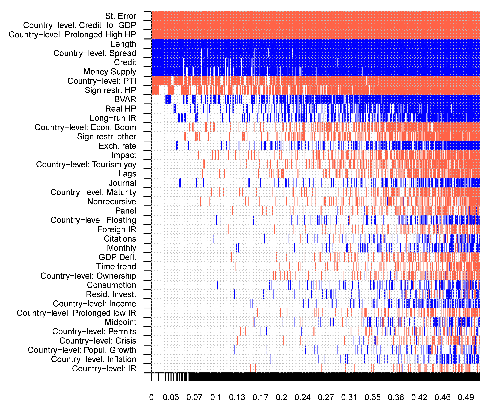

Several central banks have leaned against the wind in the housing market by increasing the policy rate preemptively to prevent a bubble. Yet the empirical literature provides mixed results on the impact of short-term interest rates on house prices: the estimated semi-elasticities range from -12 to positive values. To assign a pattern to these differences, we collect 1,555 estimates from 37 individual studies that cover 45 countries and 72 years. We then relate the estimates to 39 characteristics of the financial system, business cycle, and estimation approach. Our main results are threefold. First, the mean reported estimate is exaggerated by publication bias, because insignificant results are underreported. Second, inclusion of controls correlated with policy rates (credit or money supply) decreases the estimated effects of policy rates on house prices. Third, the effects are stronger in countries with more developed mortgage markets and generally later in the cycle when the yield curve is flat and house prices enter an upward spiral.
Fig: Publication bias and country heterogeneity drive the results

Reference: Dominika Ehrenbergerova, Josef Bajzik, Tomas Havranek (2023), "When Does Monetary Policy Sway House Prices? A Meta-Analysis." IMF Economic Review 71, 538-573.